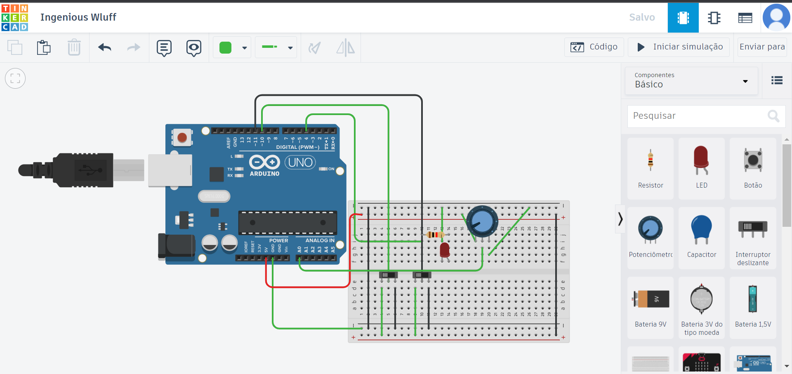
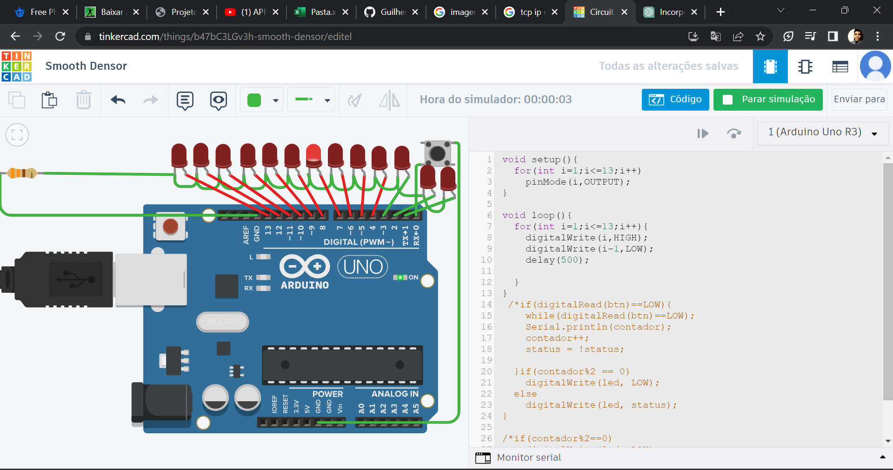
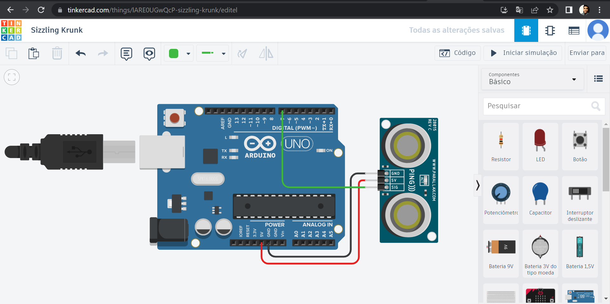
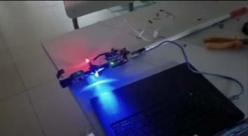
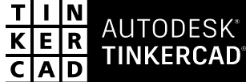
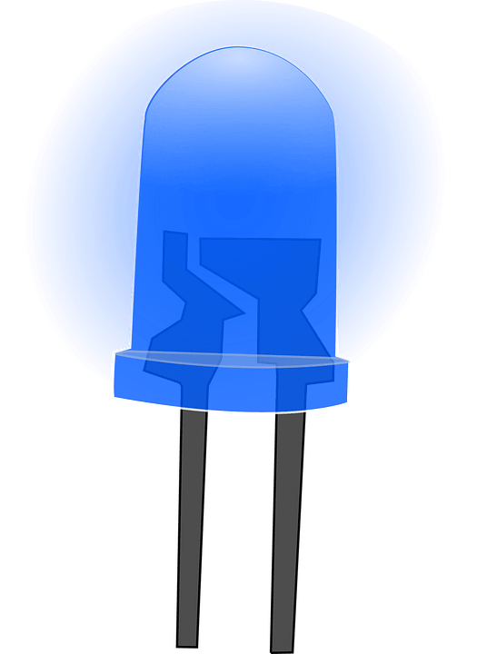
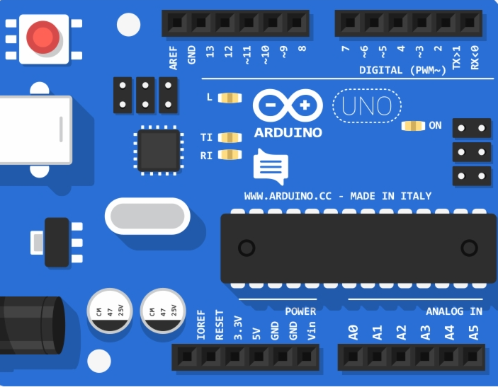
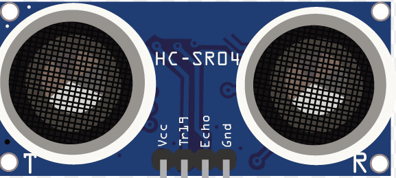

-
Sensores:
dispositivos eletrônicos ou mecânicos projetados para detectar e medir alterações em seu
ambiente físico e converter essas informações em um sinal mensurável ou legível para serem
processadas
ou utilizadas por outros sistemas.
- Instruções de bit:
operações que manipulam ou alteram bits individuais em uma representação binária de
dados.
Elas são amplamente utilizadas em programação de baixo nível, processamento de dados e
manipulação
de hardware.
- Conversão de dados:
processo de alterar a representação de um dado de um formato para outro.
- Tinkercad:
plataforma online de design e simulação 3D, desenvolvida pela Autodesk. Ela foi projetada
para
permitir que estudantes, entusiastas e profissionais criem e compartilhem projetos de design,
eletrônica
e impressão 3D.

Projeto Botões: Este projeto se trata de dois botões, na qual foi aprimorado da seguinte forma: se um botão for pressionado(qualquer um dos dois) não irá acender o led, afora se os dois botões forem clicados o led recebe nível lógico alto.

Projeto leds em ordem: Este projeto se trata de vários leds que acendem em ordem específica(direita para a esquerda), e se o botão for pressionado os leds continuaram acendendo em ordem específica e apagando ao passo que os próximos acendem, porém essa ação passa a acontecer da esquerda para direita.

Projeto Sensor Ulrassônico: Este projeto se trata de um sistema de distância, para isso foi utilizado um sensor ultrassônico (sensor de distância que possui dois pinos, um que emite e um que recebe sinal), um arduino e fios jumpers e ao modificar no Tinkercad o guia deste sensor ele irá mostrar a distância no monitor serial que foi exigida no prórpio código.

Projeto Extra: projeto Cidade Inteligente busca favorecer as pessoas, trazer conforto para elas de alguma maneira. Com isso em mente, buscamos focar em auxiliar pessoas com deficiência visual, melhorando assim a sua convivência. Para isso, eu meu irmão Kauã vieira criamos o Projeto "Guia Eletrônico". Este projeto funciona à base de sensor e placa eletrônica. A placa que utilizamos é o Arduino UNO, além do Sensor de Presença e outros componentes que fazem parte do projeto.




